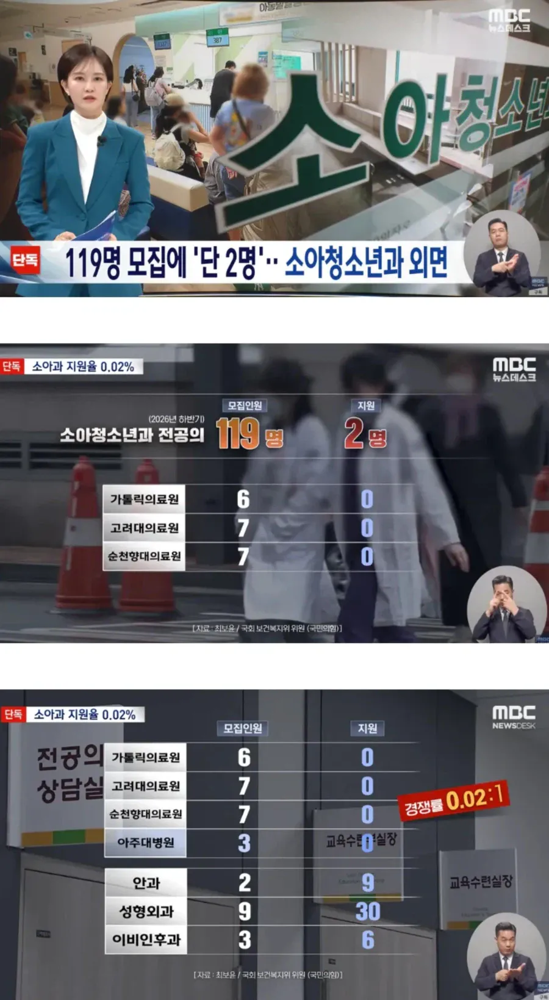
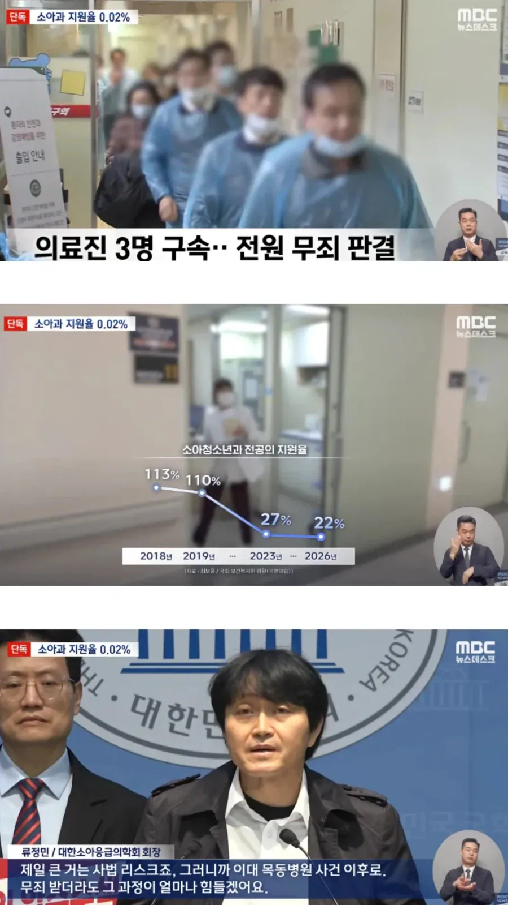

고소 러쉬 이후 119명 모집에 단 2명 지원


고소 러쉬 이후 119명 모집에 단 2명 지원
이순신 유관순이 살아돌아와도 소아과는 안함.
와 2명... 진짜 착한사람들이네 어떻게 이런 분위기에서 지원할생각을...
미용시술 기사 자격증처럼 풀면 좋겠다
부작용이야 어차피 지금도 뭔일 나면 대학병원 가라하잖아
일자리 없다며 난리면서도 좃소에는 죽어도 안가는데 의대증원한다고 소아과할까
이게 비유같다고 생각하는게 주빈이 평균
맘충들이 만든 세상이다 악깡버해라ㅋㅋㅋ
아무리 천외천이어도 의사되는 과정이 엄청나게 어려운데 리스크가 너무 크니 아무도 안하려고 함...
한의 치의는 설비 구하면 지금도 할 수 있음